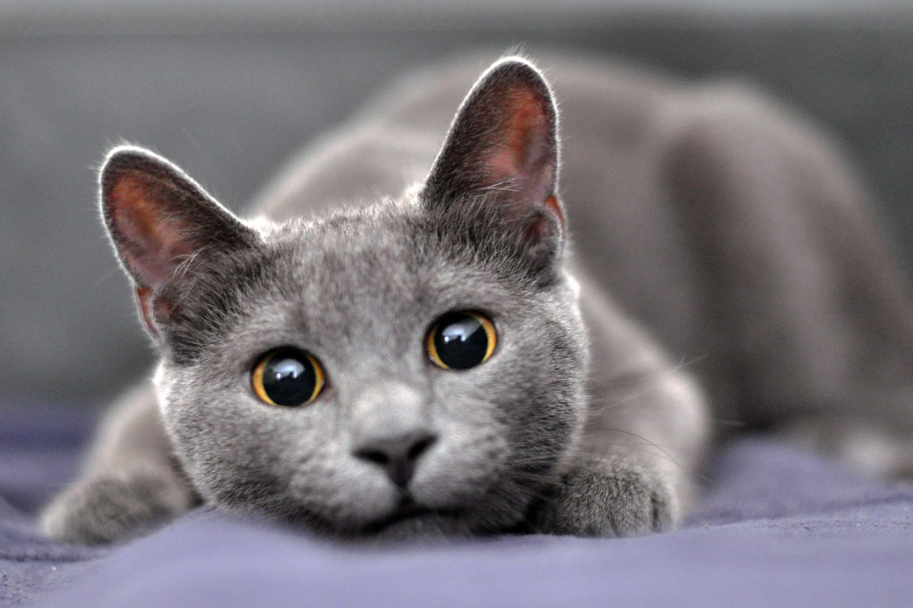

| Picture | Breed | Description |
|
Scottish Fold | These cats have distinctive, owl-like features, including rounded heads, short necks, huge eyes, and folded-over ears. Although they occasionally have long-haired Scottish folds, their coat is typically short and dense. White, blue, cream, silver, black, cameo, and brown are among the available hues. Solid, tabby, tortoiseshell, bicolor, spotted, and shaded are a few examples of coat patterns. Their beautiful, big eyes might be blue, green, or gold. |
| Norwegian Forest | Their thick, lustrous coats are water-resistant and made to withstand the severe Norwegian winters. Wegies need frequent brushing and maintenance because their undercoat is dense and keeps them warm. In truth, their winter undercoat will molt in the spring. They do lose their coats. | |
|  | Russian Shorthair | Medium-sized Russian blue cats have short, fluffy coats that jut out from their bodies and give the impression that they are larger than they actually are. Their smooth, silky coats are a rich charcoal gray with a hint of silvery brightness. |
| Website Logo | Website Name | Link |
 |
Daily Paws | Jimerson D. & Guthrie C. (2021, October 26). Scottish Fold: https://www.dailypaws.com/cats-kittens/cat-breeds/scottish-fold |
|
Daily Paws | Braaksma H. (2021, September 26) Russian Blue. Retrieved from: https://www.dailypaws.com/cats-kittens/cat-breeds/russian-blue |
|
Daily Paws | Braaksma H. & Guthrie C. (2021, October 11) Norwegian Forest Cat. Retrieved from: https://www.dailypaws.com/cats-kittens/cat-breeds/norwegian-forest-cat |